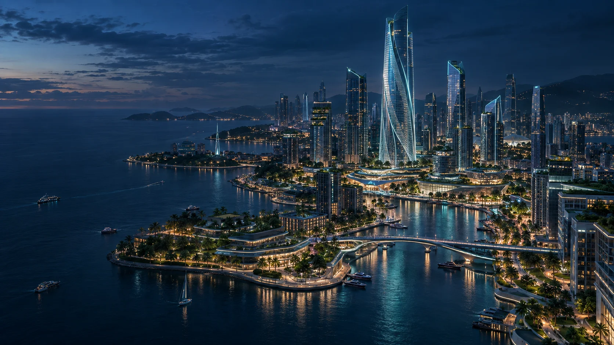

FUTURE URBAN ENERGY / RESEARCH NETWORK
Sense the city. Shape tomorrow.
Where data, places and human imagination meet.
Exploring smarter, greener, more liveable urban futures.
Small experiments. New possibilities for urban life.
FIG. 01AI-generated city concept
SIX TEAMS / ONE CONNECTED MISSION
Choose a field.
Explore a connected future.
Six focused research spaces.
Six modules. One shared publication library.
WEBSITE / CONTRIBUTORS
The people behind
this website.
Recognising contributions to the website's
design, content and maintenance.
Website contributor credits will be added soon.
NETWORK / ABOUT
The next chapter of cities.
Built around people.
We explore the relationship between cities, technology and people.
Bring a question. Start an experiment.